🎯 Objetivo do projeto
Em 3 meses, projetar e desenvolver uma nova interface para o sistema, aplicando as diretrizes projetuais desenvolvidas, que, após os testes obtenha uma taxa de aprovação de 80% entre novos usuários e usuários ativos.
Objetivo definido com base na metodologia S.M.A.R.T. (Específico - Mensurável - Atingível - Relevante - Temporal).
📝 Diretrizes projetuais
Desenvolvida após entrevistar outros 10 profissionais de experiência de usuário, que haviam em média 5 anos de experiência na área, as diretrizes guiaram o plano de trabalho para esse projeto.
1. Entendimento
2. Definição de usuários e personas
3. Entrevistas
4. Geração de ideias
5. Sitemap
6. Wireframes
7. Design Visual
8. Prototipação
9. Validação interna
10. Teste de usabilidade
🔎 1. Entendimento
Antes de iniciarmos, é importante ressaltar que o sistema já existia e já possuia usuários, este case demonstra um processo de redesign.
Dividi a etapa de entendimento em duas partes, conhecer as funcionalidades já desenvolvidas e conhecer o tamanho e impacto do sistema para os já usuários.
Para a primeira, solicitei a equipe de vendas um primeiro acesso guiado, onde me foi simulado como normalmente o sistema era apresentado à novos clientes.
Após, para entender o tamanho do sistema e quantidade de acessos, analisamos os dados coletados do Google Analytics, como quantidade de acesso diário, quantidade de usuários e fluxos de navegação.
A partir daqui, a navegação dentro do sistema e o contato com a equipe de suporte foi constante.
👩 2. Definição de peças chaves e personas
Foram feitos o entendimento das peças chaves para a UX do sistema e a definição das personas de nossos usuários.
Peças chave:
Equipe de Suporte
Equipe de Testes
Equipe de Desenvolvimento
Usuários chave:
Gerente e Instrutor
Secretária
Profissional Instrutor
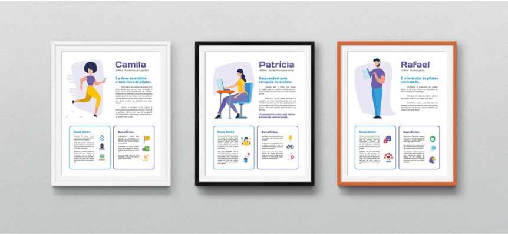
Quadros com as personas definidas foram expostos à equipe do projeto.
📼 3. Entrevistas
Para o processo de entrevistas, tive a oportunidade de ir até o ambiente de atuação de nossos usuários, onde puder conhecer o ambiente de utilização do produto e o dia a dia dos profissionais.
As entrevistas tiveram autorizações
prévia para gravação em áudio da conversa, com isso pude no 1 a 1 dar atenção ao entrevistado e após a realização analisar os áudios e transcrever os principais insights.
Foram 60 perguntas para 09 entrevistados, entre eles
personas e usuários chaves que geraram 90 cartões de insight.
💡 4. Geração de ideias
Para essa etapa, organizei e ministrei um brainstorm com as equipes chaves envolvidas.
A equipe nunca havia feito nenhuma dinâmica de ideação antes, então, primeiro foi explicado as regras do brainstorm, apresentado quem
eram nossos usuários e só depois dado ínicio ao processo.
Para facilitar o entendimento chamei o brainstorm de Pancada de Pitacos, e funcionou da seguinte maneira:
1. Apresentação da proposta de ideação- Apresentação
das personas
2. Regras do brainstorm
3. Card sorting, onde foi retirado os cards com os insights separados por cada persona ou equipe e em cima disso gerávamos ideias.
Os resultados foram muito positivos, obtivemos do brainstorm:
• 20 ideias filtradas
• 14 referente ao sistema
• 6 referente a processos internos
Ao final do brainstorm um membro da equipe comentou ”Por mim poderiamos ter ficado o dia todo gerando ideias, foi muito legal”.
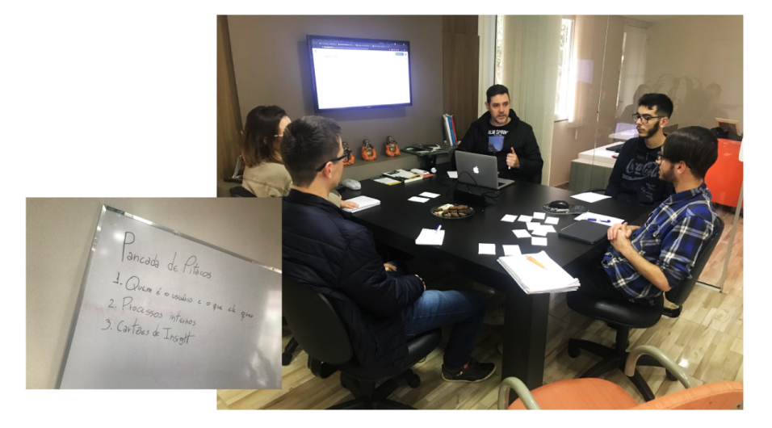
Responsáveis pelas equipes chaves realizando o brainstorm.
No quadro o roteiro, na TV as regras do brainstorm e em cima da mesa os cartões de insight e lanche.
🗺️ 5. Sitemap
Desenvolvido o
sitemap do sistema atual. Em cima desse fizemos várias conversar e identificamos oportunidades e modificações necessárias.
Desenvolvi este
sitemap junto a um desenvolvedor
front-end recém contratado e notei o potencial dos
sitemaps para o entendimento da estrutura do sistema, pois, logo após, já estavamos discutindo saídas sobre a
estrutura e as funcionalidades.
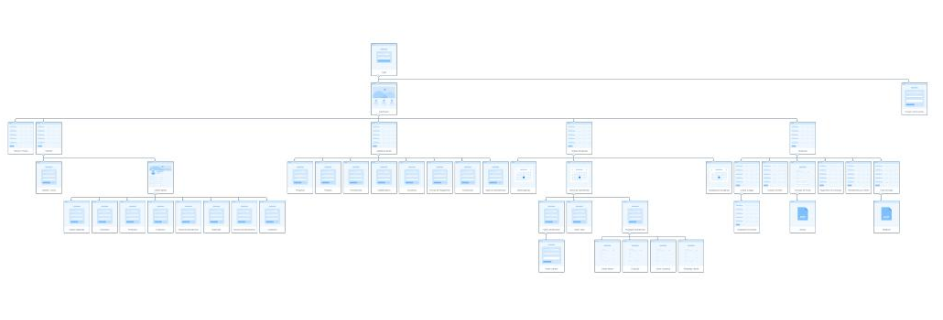
Sitemap desenvolvido na plataforma octopus.do
✍ 6. wireframes
Na etapa de wireframes iniciamos o processo de reconstrução visual do projeto.
Considero os wireframes como peça importante para que desenvolvedores, designers e demais stakeholders alinhem suas expectativas antes de algo que exija mais tempo seja produzido.
Lembrando que a cada nova funcionalidade que redesenhávamos voltávamos a essa etapa.
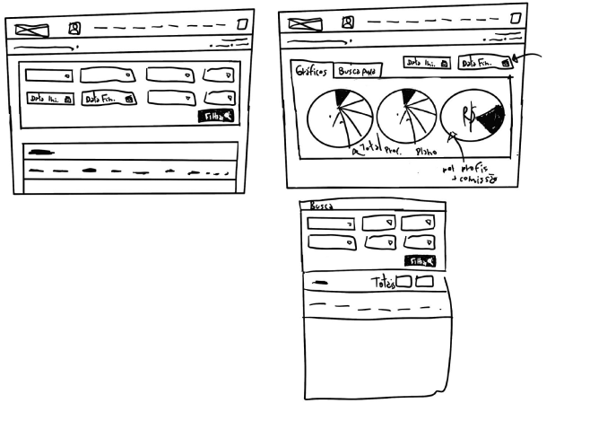
Wireframes feature geração de relatórios.
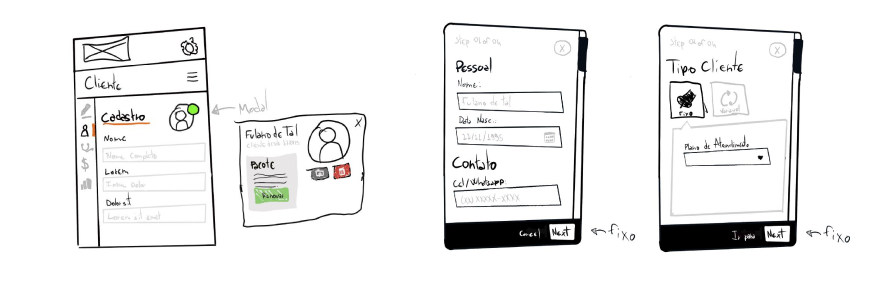
Wireframes da tela do cliente - mobile first.
🧡 7. Design Visual
Durante as entrevistas escutamos um relato muito forte: “Os fisioterapeutas preferem ser vistos muito mais como profissionais ativos do que como médicos que ficam atrás de uma mesa distribuindo receitas”.
Visando esse e demais feedbacks instruí a equipe há um rebranding, visto que a identidade visual antes muito conectada ao ramo clínico estava impactando diretamente nesse sentimento, e indiratamente na experiência de uso durante
o dia a dia.
Começamos testando a nova identidade aplica à tela de login, confira abaixo o antes e o depois.
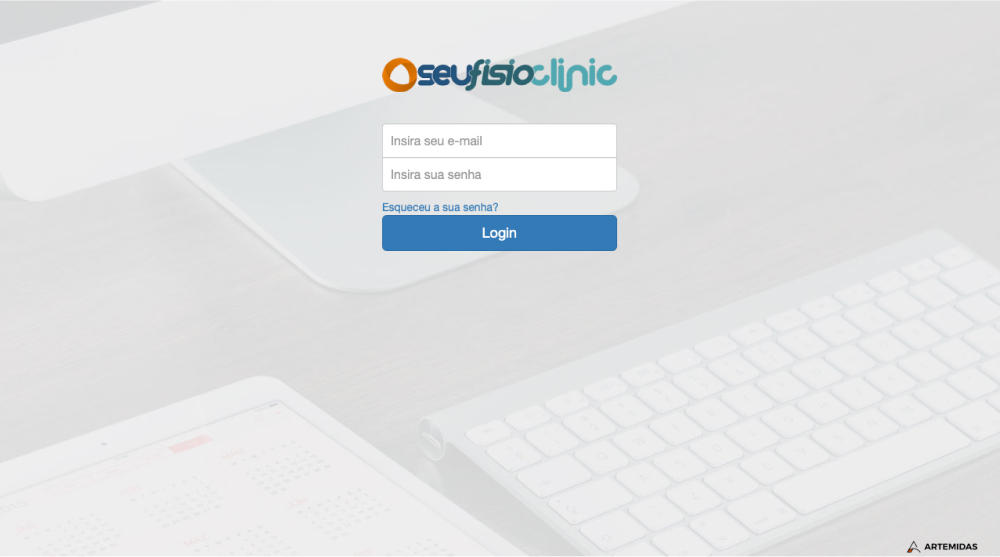
Tela de login antes do rebranding.
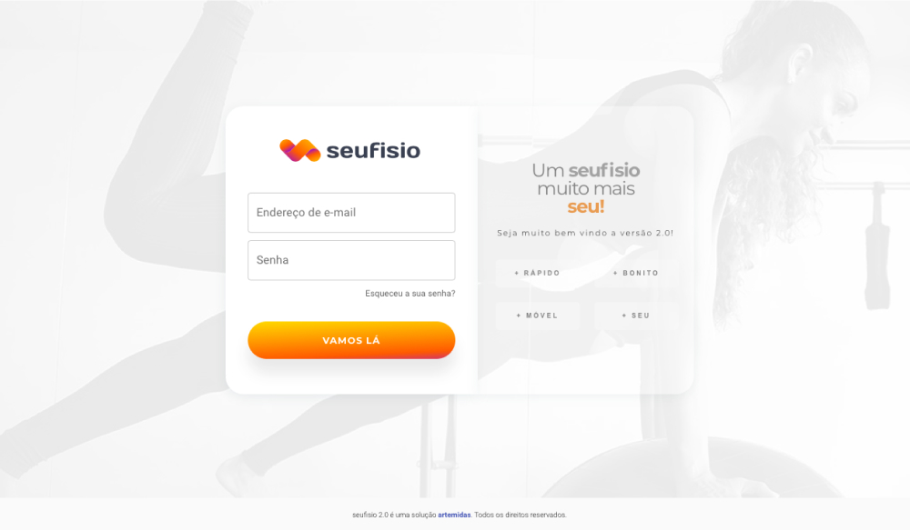
Tela de login pós rebranding.
💻 8. Prototipação
Antes de prototipar fizemos uma análise em cada página (cruzando com as informações de todas as etapas anteriores) para entender quais seriam os riscos que poderiam levar os usuários à experiências negativas.
Abaixo apresento algumas telas antes e depois, seguindo dos pontos que motivaram a prototipação do layout com as devidas modificações.
• Listagem de clientes
- Informações eram incompletas para novos usuários
- Botões de ação estavam em lugares incorretos, dificultando o entendimento da ação
- Havia falta de agilidade no processo de busca
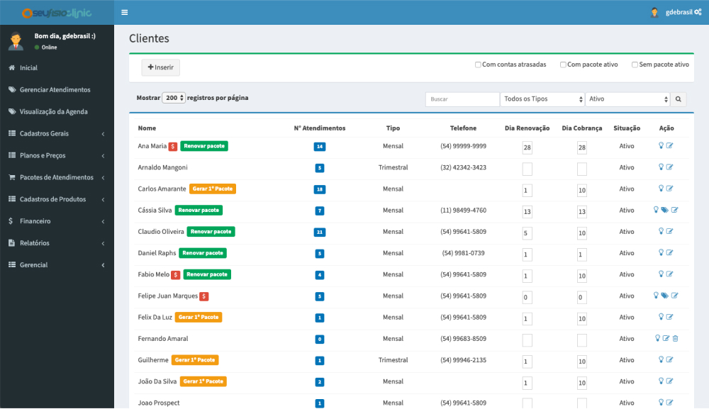
Tela de listagem de clientes antes do redesign.
- Campos modularizados conforme a ação correspondente
- Texto do botão mais explicativo, para novos usuários
- Agilidade com a tecla "enter" executando a busca
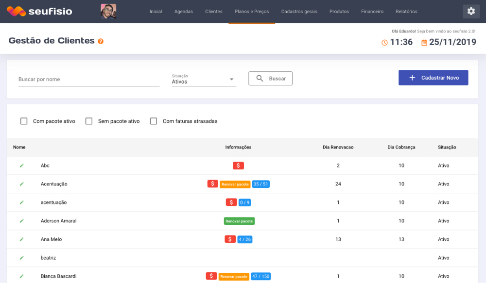
Nova tela de listagem de clientes proposta.
• Cadastro de clientes
- Não oferecia opção de retorno
- Campos ocupavam todo o espaço horizontal da tela
- As informações não estavam corretamente modularizadas
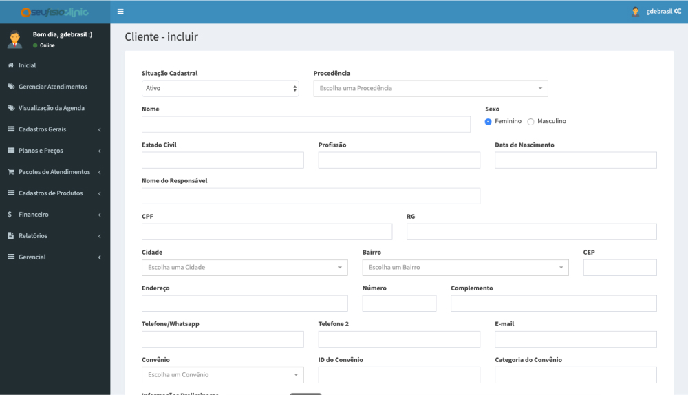
Tela de listagem de clientes antes do redesign.
- Opção de salvamento rápido quando concluído os campos obrigatórios
- Campos ocupando um menor espaço visual dando aparência de menos etapas de cadastros
- Informações corretamente modularizadas
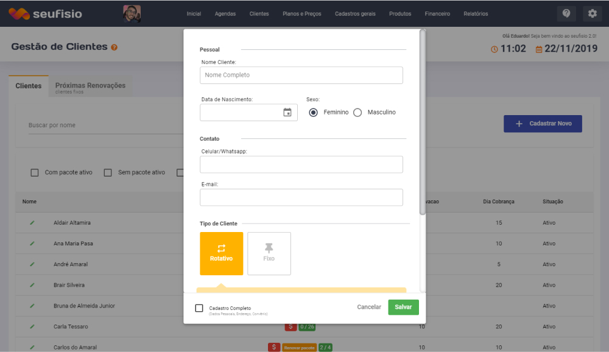
Nova tela de cadastro de clientes proposta.
• Visualização agenda
- Poluição visual, a maioria das vezes os usuários abriam pra visualizar e não editar
- Campos dividindo um grande espaço horizontal, tornando a tela visualmente complexa
- As informações não estavam corretamente modularizadas
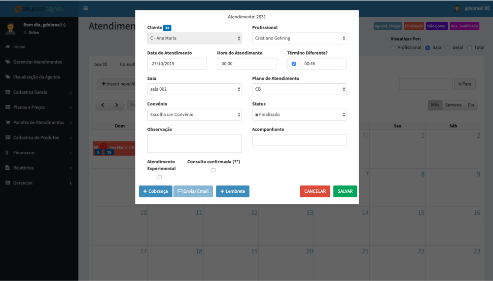
Tela de visualização de agenda antes do redesign.
- Campos ocupando um menor espaço visual
- Opção de salvamento automático campo a campo, sem necessidade de botão de confirmação
- Informações e botões corretamente modularizadas
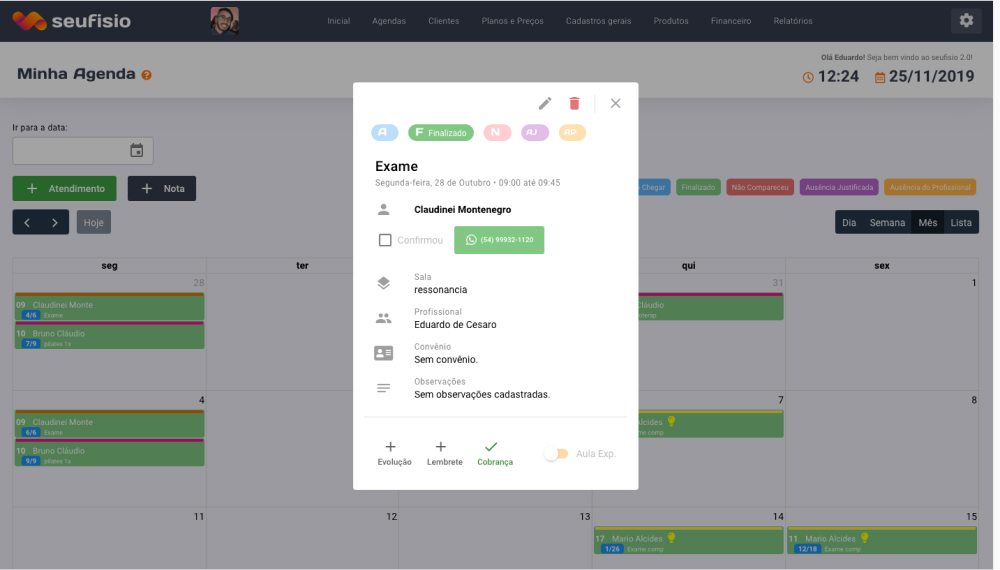
Nova tela de visualização de agenda proposta.
🏗️ Restante em construção...
Este case ainda está sendo construído.
Volte novamente em breve.